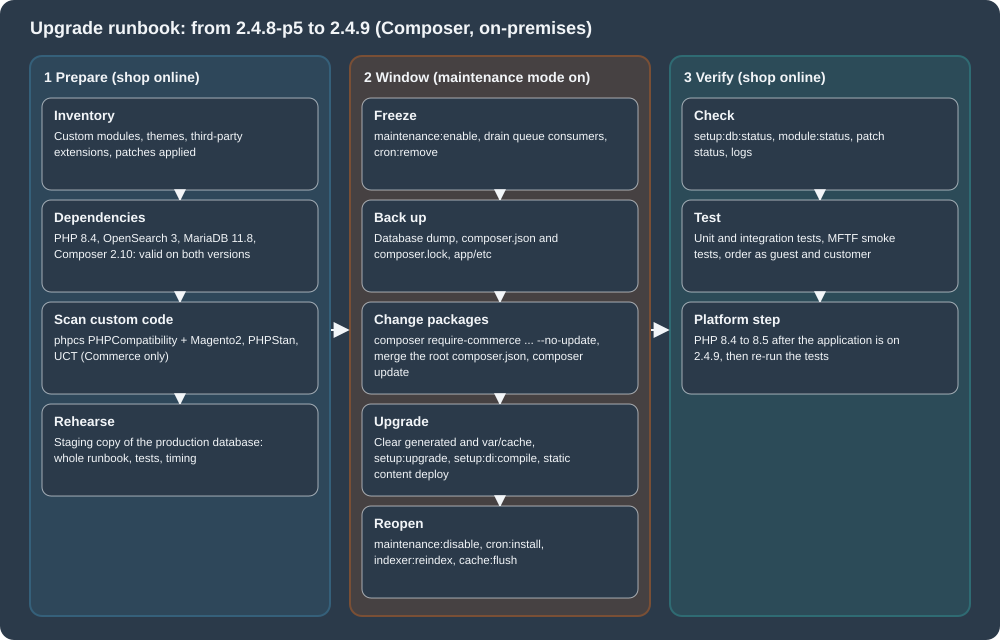

Upgrades
|
This content was generated with the assistance of AI and should be verified against the official documentation before being relied on in production. |
This page was written against Magento Open Source and Adobe Commerce 2.4.9 (general availability 2026-05-12, standard support until 2029-05-31), the 2.4.8-p5 and 2.4.7-p10 lines it replaces, and Mage-OS 3.6.0 (released 2026-10-14, based on Magento 2.4.9). It was checked on 2026-10-27. It covers upgrades of self-hosted installations with Composer, which is the only supported method since 2.4.0; Adobe Commerce on cloud infrastructure follows the same version rules and adds the Cloud tooling, and Adobe Commerce as a Cloud Service (ACCS) is versionless and has no upgrade procedure. The page comes at the end of the Magento path: it assumes the module layout of module anatomy, uses the checks of testing, coding standards and the Marketplace to find what an upgrade breaks, and relies on security for the reasons not to postpone one. The version rules are in versions, lifecycle and requirements, and the installation steps that an upgrade repeats are in installation.
The running example is Pocket Coffee. The page upgrades a Pocket Coffee installation from Magento 2.4.8-p5 (Mage-OS 2.3.0) to 2.4.9 (Mage-OS 3.6.0), end to
end, in a disposable copy on the local machine: install, Composer update, setup:upgrade, compile, re-index and a change of the PHP version, with the output of each step. It
also scans a deliberately outdated module, PocketCoffee_Legacy, written in the style of the 2016 books, to show what the tools report and what the replacements are. What
could not be run (the Upgrade Compatibility Tool, Cloud tooling, the Marketplace) is listed in What was run and what was not.
When to upgrade
An upgrade is not optional for long: security fixes are only delivered for supported lines, and Cloud environments are forced to move. Adobe’s lifecycle policy gives each line three years of standard support from its general availability date; Adobe Commerce 2.4.6 and 2.4.7 got a further year of extended support at no extra cost, and a one-time security-only transitional period exists for the lines that are already past extended support. Extended support security patches are for Adobe Commerce only and are not available for Magento Open Source.
| Line | General availability | End of standard support | End of extended support (Commerce) | End of security-only period (Commerce) |
|---|---|---|---|---|
2.4.9 |
2026-05-12 |
2029-05-31 |
none listed |
none listed |
2.4.8 |
2025-04-08 |
2028-05-31 |
none listed |
none listed |
2.4.7 |
2024-04-09 |
2027-05-31 |
2028-05-31 |
none listed |
2.4.6 |
2023-03-14 |
2026-08-11 |
2027-08-31 |
2028-05-31 |
2.4.5 |
2022-08-09 |
2025-08-12 |
2026-08-11 |
2027-05-31 |
On Adobe Commerce on cloud infrastructure, unsupported versions are no longer maintained from 2027-06-01 for 2.4.4 and 2.4.5 and from 2028-06-01 for 2.4.6 and 2.4.7: Adobe suspends the environments, and the storefront goes offline. For a self-hosted shop nothing happens on the date, except that it receives no security fixes and that the third-party software it runs (PHP, MySQL, OpenSearch, Valkey) leaves its own support windows as well; Adobe’s lifecycle page states that it does not provide fixes for dependencies that reach end of life during a supported release.
Adobe’s own advice on effort is to plan upgrades every year at the start of the year, to take the pre-release (available to Commerce customers and partners two weeks before general availability) for a first compatibility pass, and to avoid skipping releases, because skipped releases make the next upgrade more complex. A security patch is the cheapest kind of upgrade, a minor release (for example 2.3.x to 2.4.0 or 2.4.8 to 2.4.9) the most expensive, and the factors that decide the effort are the amount of custom code, the number of third-party extensions and their quality.
The runbook

The sections below follow the picture: the dependency matrix and the checklist (phase 1), the tools that find breaking changes in custom code (phase 1), the migrations of search, cache and database (phases 1 and 3), the tested procedure (phase 2), and the checks after it (phase 3).
Dependencies: what each line supports
An upgrade changes the supported versions of PHP, the database, the search engine, the cache and the message broker, and the installation has to be on a combination that Adobe tested for the target release. The table is the on-premises part of the system requirements for the latest patch of each line, as published on the check date.
| Component | 2.4.7-p10 | 2.4.8-p5 | 2.4.9 |
|---|---|---|---|
PHP |
8.3, 8.2 |
8.4, 8.3 |
8.5 (8.4 is allowed for upgrades only) |
Composer |
2.10 |
2.10 |
2.10 |
MariaDB |
10.11, 11.8 |
11.4, 11.8 |
12.3 |
MySQL |
not supported |
8.4 |
8.4 |
OpenSearch |
2.19, 3 |
3 |
3 |
Elasticsearch |
8 |
8 |
not listed |
Valkey |
8.1 |
8.1 |
9 |
Redis |
not supported |
not listed |
not listed |
RabbitMQ |
4.3 |
4.3 |
4.3 |
ActiveMQ Artemis |
2 |
2 |
2 |
Varnish |
8 |
8 |
8 |
nginx |
1.30 |
1.30 |
1.30 |
Three notes on reading it. First, the pages disagree on details: the 2.4.9 requirements table lists PHP 8.5 only, and the release notes allow PHP 8.4 "for upgrade purposes only (not recommended for production)"; the release notes say that "MariaDB 11.8 and 12.x are now supported" while the table lists 12.3 for on-premises (and 12.3 recommended plus 11.8 on cloud infrastructure), and the page states that 2.4.9 is tested with MariaDB 12.3. Second, the upgrade guide says that 2.4.8 and later no longer support Elasticsearch and that OpenSearch must be used, while the 2.4.8-p5 on-premises table still lists Elasticsearch 8; treat OpenSearch 3 as the target either way, because 2.4.9 lists no Elasticsearch. Third, Adobe does not support combinations that are not in the tables.
The overlap of two adjacent lines is what makes a safe order of work. For the step from 2.4.8-p5 to 2.4.9 the combination that both releases accept is: Composer 2.10, OpenSearch 3, MySQL 8.4 (or MariaDB 11.8, which the 2.4.9 notes accept), RabbitMQ 4.3, Varnish 8 and nginx 1.30, with PHP 8.4. PHP 8.4 is the bridge: 2.4.8-p5 supports it and 2.4.9 allows it for the upgrade. Valkey is the exception (8.1 against 9), so the cache server moves with or just after the application, and the PHP step to 8.5 comes last. That is the order of the tested procedure below, and it is a derivation from the tables, not a statement of Adobe.
Before the upgrade
Adobe’s prerequisites list is short, and each item prevents a failure that is hard to diagnose afterwards:
-
Update all software to the matrix above, and read the PHP migration appendix of the target PHP version.
-
Check the search engine:
bin/magento config:show catalog/search/enginemust printopensearch(or a third-party engine your vendor supports). Upgrading from 2.3.x to 2.4 without Elasticsearch or OpenSearch leaves the Admin inaccessible, because 2.4.0 removed the MySQL catalog search engine. -
Convert database tables from
COMPACTtoDYNAMICrow format and from MyISAM to InnoDB. The check is a query oninformation_schema; on the 2.4.8-p5 lab installation it reported only InnoDB tables with the dynamic row format (379 of them, plus one view):SELECT engine, row_format, COUNT(*) AS tables FROM information_schema.tables WHERE table_schema = DATABASE() AND table_type = 'BASE TABLE' GROUP BY engine, row_format; -
Set the open files limit to 65536 or more for the file system owner (
ulimit -n 65536), and avoid apcre.recursion_limitinphp.inibecause it can make rollbacks incomplete without a message. -
Verify that cron runs (
crontab -lshows the Magento block that callsbin/magento cron:run). -
Set
DATA_CONVERTER_BATCH_SIZE(default 50,000) before an upgrade that converts serialized data to JSON, which 2.4.0 introduced and which is slow on largesales_order,quoteandurl_rewritetables; do not raise it to about 1 GB of memory without testing. -
Verify file permissions and set the document root to
pub/. -
Install the Composer root update plugin (
magento/composer-root-update-plugin; in a Mage-OS project template it ismage-os/composer-root-update-plugin) and usecomposer require-commercefor the product package. -
Back up the code,
composer.json,composer.lock,app/etcand the database, and rehearse on a copy of production data.
Backward-incompatible changes
Adobe publishes every backward-incompatible change (BIC) of a release in two places: a highlights page with the changes that need explanation and a reference page per version step
(2.4.8 to 2.4.9, 2.4.7 to 2.4.8, and so on, each in a Commerce and an Open Source flavour) that lists them by kind: class changes, interface changes, database changes, system
configuration changes (fields and groups removed) and XSD changes, each with the visibility of the member ([public], [protected]) and the nature of the change (removed, parameter typing
changed, return typing changed).
The highlights of the last releases are the best summary of what an upgrade does to custom code:
| Release | Changes that need action |
|---|---|
2.4.9 |
GraphQL alias limit (10) and query length limit (1,048,576 characters); new 2FA blocks; |
2.4.8 |
MySQL 8.4 foreign key restrictions; Duo Web SDK v4 and the new 2FA parameters ( |
2.4.7 |
The Elasticsearch 7 module deprecated; the SRI block |
2.4.6 |
|
2.4.4 and earlier |
TinyMCE renamed from |
The 2.4.9 XSD removals deserve a warning of their own. The Open Source reference page lists 59 schema files (the Adobe Commerce page lists 69) whose removal can break the xsi:noNamespaceSchemaLocation URN in the XML files of a custom module (for example
urn:magento:module:Magento_Webapi:etc/webapi.xsd). The page does not explain what replaces them, and Mage-OS 3.6.0 (based on the same release) still ships webapi.xsd and csp_whitelist.xsd, so the
schema validation of the earlier pages of this section cannot confirm the Adobe behaviour. Validate the XML files of every custom module against an Adobe 2.4.9 installation, or against the
documentation of the URNs, before upgrading an Adobe Commerce or Open Source shop.
Finding the changes in your own code
Four tools look for breaking changes, in the order of how much they need.
| Tool | What it finds | Availability |
|---|---|---|
PHP_CodeSniffer with the PHPCompatibility standard |
Syntax and functions that are deprecated or removed in a target PHP version. |
Open Source and Commerce (the Magento coding standard bundles a PHPCompatibility fork). |
PHP_CodeSniffer with the Magento2 standard |
Legacy patterns: |
Open Source and Commerce. |
PHPStan with the Magento configuration |
Unknown classes, functions and properties against the installed code, which is how a class removed in the new release shows up. |
Open Source and Commerce. |
Upgrade Compatibility Tool (UCT) |
Compares the installed code, core and custom, with a target version and reports critical issues, errors and warnings: API usage, removed classes and methods, database schema differences, GraphQL schema differences. |
Adobe Commerce only. |
A module written in the style of 2016
PocketCoffee_Legacy is an invented module that uses the patterns that the 2016 books teach: a setup script, the object manager, the Zend classes, a serialised cache entry and PHP 5-era
syntax. The setup script creates the table of roast batches:
<?php
namespace PocketCoffee\Legacy\Setup;
use Magento\Framework\Setup\InstallSchemaInterface;
use Magento\Framework\Setup\ModuleContextInterface;
use Magento\Framework\Setup\SchemaSetupInterface;
class InstallSchema implements InstallSchemaInterface
{
public function install(SchemaSetupInterface $setup, ModuleContextInterface $context)
{
$installer = $setup;
$installer->startSetup();
$table = $installer->getConnection()->newTable($installer->getTable('pocketcoffee_roast_batch'))
->addColumn('batch_id', \Magento\Framework\DB\Ddl\Table::TYPE_INTEGER, null, [
'identity' => true, 'unsigned' => true, 'nullable' => false, 'primary' => true,
], 'Batch ID')
->addColumn('roast_date', \Magento\Framework\DB\Ddl\Table::TYPE_DATE, null, ['nullable' => false], 'Roast date')
->setComment('Roast batches');
$installer->getConnection()->createTable($table);
$installer->endSetup();
}
}and the model has a collection of calls that PHP and Magento have since removed or replaced:
<?php
namespace PocketCoffee\Legacy\Model;
class RoastLabel
{
protected $_json;
public function __construct(\Magento\Framework\Json\Helper\Data $json)
{
$this->_json = $json;
}
public function label($origin, $date = null, string $grind = null)
{
$om = \Magento\Framework\App\ObjectManager::getInstance();
$cache = $om->get(\Magento\Framework\App\CacheInterface::class);
$name = utf8_encode($origin);
$stamp = strftime('%Y-%m-%d', strtotime($date));
$text = "Roasted ${name} on {$stamp}";
$first = $name{0};
$data = serialize(['label' => $text, 'grind' => $grind]);
$cache->save($data, 'roast_label_' . md5($name));
$this->unexpected = \Zend_Json::encode(['label' => $text]);
return $this->_json->jsonEncode(['label' => $text]);
}
public function oldLoop(array $rows)
{
while (list($k, $v) = each($rows)) {
$f = create_function('$x', 'return $x * 2;');
}
return filter_var('<b>x</b>', FILTER_SANITIZE_STRING);
}
}php -l on PHP 8.5 stops at the first parse error ($name{0}, the curly brace string offset that PHP 8.0 removed): "Parse error: syntax error, unexpected token "{"". After that line was corrected,
PHPCompatibility 8.5 reported:
vendor/bin/phpcs -q --standard=PHPCompatibility --runtime-set testVersion 8.5 --extensions=php /tmp/legacySource: PHP manual: Migration appendices
18 | WARNING | Function utf8_encode() is deprecated since PHP 8.2; Use mb_convert_encoding(), UConverter::transcode() or iconv instead
19 | WARNING | Function strftime() is deprecated since PHP 8.1; Use date() or IntlDateFormatter::format() instead
20 | WARNING | Using ${var} in strings is deprecated since PHP 8.2, use {$var} instead. Found: ${name}
21 | ERROR | Curly brace syntax for accessing array elements and string offsets has been deprecated in PHP 7.4 and removed in PHP 8.0. Found: $name{0}
24 | WARNING | Creation of dynamic property PocketCoffee\Legacy\Model\RoastLabel::$unexpected is deprecated since PHP 8.2
30 | ERROR | Function each() is deprecated since PHP 7.2 and removed since PHP 8.0; Use a foreach loop or ArrayIterator instead
31 | ERROR | Function create_function() is deprecated since PHP 7.2 and removed since PHP 8.0; Use an anonymous function instead
33 | WARNING | The constant "FILTER_SANITIZE_STRING" is deprecated since PHP 8.1
The implicit nullable parameter on line 17 (string $grind = null, deprecated in PHP 8.4) was not reported by this version of the sniffs, which is a reminder that a scan finds many problems but not all of them: the unit and integration tests
on the target PHP version are the second net. The Magento2 standard finds the Magento-specific problems:
FILE: /tmp/legacy/Setup/InstallSchema.php 1 | ERROR | InstallSchema scripts are obsolete. Please use declarative schema approach in module's etc/db_schema.xml file FILE: /tmp/legacy/Model/RoastLabel.php 22 | ERROR | The use of function serialize() is forbidden; use \Magento\Framework\Serialize\SerializerInterface::serialize() instead 23 | ERROR | The use of function md5() is forbidden; use improved hash functions (SHA-256, SHA-512 etc.)() instead 24 | ERROR | Class 'Zend_Json' is restricted in /tmp/legacy/Model/RoastLabel.php. Suggested replacement: Magento\Framework\Serialize\Serializer\Json 31 | ERROR | The use of function create_function() is forbidden FILE: /tmp/legacy/Controller/Adminhtml/Order/Export.php 12 | ERROR | Use of echo language construct is discouraged. 12 | ERROR | Direct use of $_GET Superglobal detected.
and PHPStan with the framework configuration (phpstan analyse --level 0 -c dev/tests/static/testsuite/Magento/Test/Php/_files/phpstan/phpstan.neon) finds what no longer exists in the installed code:
Model/RoastLabel.php
24 Access to an undefined property PocketCoffee\Legacy\Model\RoastLabel::$unexpected.
24 Call to static method encode() on an unknown class Zend_Json.
30 Function each not found.
31 Function create_function not found.
Controller/Adminhtml/Order/Export.php
12 Method PocketCoffee\Legacy\Controller\Adminhtml\Order\Export::execute() should return
Magento\Framework\App\ResponseInterface|Magento\Framework\Controller\ResultInterface but return statement is missing.
[ERROR] Found 6 errors
The Zend_Cache_Core class used in the controller is not reported by this level because the call is a dynamic instantiation; at level 1 and higher it would be. Replacing the setup script is
the largest step: the equivalent declarative schema is one file, which validated against the framework’s schema.xsd on the local installation (the whitelist is generated with
bin/magento setup:db-declaration:generate-whitelist --module-name=PocketCoffee_Legacy, see declarative schema and patches):
<?xml version="1.0"?>
<schema xmlns:xsi="http://www.w3.org/2001/XMLSchema-instance"
xsi:noNamespaceSchemaLocation="urn:magento:framework:Setup/Declaration/Schema/etc/schema.xsd">
<table name="pocketcoffee_roast_batch" resource="default" engine="innodb" comment="Roast batches">
<column xsi:type="int" name="batch_id" unsigned="true" nullable="false" identity="true" comment="Batch ID"/>
<column xsi:type="date" name="roast_date" nullable="false" comment="Roast date"/>
<constraint xsi:type="primary" referenceId="PRIMARY">
<column name="batch_id"/>
</constraint>
</table>
</schema>The Magento coding standard repository also ships a Rector configuration (rector.php) with Magento-specific rules, for example one that replaces a null limit in mb_strpos and preg_split calls and one that
replaces new DateTime(null), which are the PHP 8.1 deprecations that appear most often in older extensions.
The Upgrade Compatibility Tool
The UCT is distributed as a Composer project that needs Adobe access keys and is only available for Adobe Commerce, so it was not run for this page. The documentation describes it as follows.
composer create-project magento/upgrade-compatibility-tool uct --repository https://repo.magento.com
chmod +x ./uct/bin/uct
bin/uct upgrade:check <dir> --coming-version 2.4.9 --ignore-current-version-compatibility-issues
bin/uct dbschema:diff 2.4.8 2.4.9
bin/uct core:code:changes <dir>
bin/uct graphql:compare <endpoint-a> <endpoint-b>
bin/uct refactor <dir>upgrade:check analyses every module installed in the directory against the target; --current-version overrides the detected version, --min-issue-level filters (the default level is WARNING),
--ignore-current-version-compatibility-issues (-i) removes the problems that already exist on the current version so that only the new ones remain (it applies to PHP API validations only),
and --coming-version (-c) selects any tag from 2.3 upwards (it cannot be older than the installed version, and the tag is given without quotation marks). dbschema:diff shows the database schema
differences between two versions, core:code:changes compares the installation with a clean copy to find core code that was modified (the changes that are lost in an upgrade), graphql:compare
compares the schemas of two GraphQL endpoints and refactor fixes a reduced set of issues automatically. The tool needs PHP 7.3 or later, Node.js, at least 2 GB of memory and the PCNTL extension, and it
can also run from the Site-Wide Analysis Tool or as a run configuration of the Magento PhpStorm plugin. Open Source shops have no UCT: they rely on the BIC pages, the sniffs above and their own tests.
Dependency migrations
PHP
The PHP step is the one that most often causes a failed upgrade. The error handler of the framework turned a deprecation notice into a fatal error on the lab installation (default mode), so code that was written for an older PHP stops at the first deprecated construct. On the lab installation, the 2.4.8-p5 code (Mage-OS 2.3.0, which declares PHP 8.2 to 8.4) was installed on PHP 8.4 and then started on PHP 8.5:
There is an error in /var/www/html/ul/vendor/mage-os/framework/App/ErrorHandler.php at line: 61 Deprecated Functionality: Non-canonical cast (boolean) is deprecated, use the (bool) cast instead in .../Composer/ComposerInformation.php on line 280
bin/magento --version did not even start. After the upgrade to 2.4.9 the same installation started on PHP 8.5.12. The order is therefore: upgrade the application on the highest PHP version that the old release supports (8.4),
then move to PHP 8.5. The 2.4.8 code base also needed ext-ftp, which the 2.4.9 metapackage no longer requires, so that extension was added to the old image only to reproduce the starting state.
Elasticsearch to OpenSearch
OpenSearch is the open-source fork of Elasticsearch 7.10.2. Adobe Commerce supports it since 2.4.4 (and 2.4.3-p2 and 2.3.7-p3); since 2.4.6 it has its own module and configuration fields, and 2.4.8 and later no longer support Elasticsearch. The migration of Adobe is deliberately simple, and it assumes that the shop is the only user of the search server:
-
Check the prerequisites of the search engine and the target versions (OpenSearch 3 for 2.4.8 and 2.4.9).
-
Put the shop in maintenance mode, optionally uninstall Elasticsearch, install OpenSearch.
-
Configure the engine in the Admin (Stores > Configuration > Catalog > Catalog > Catalog Search > Search Engine) or with the CLI, flush the cache and re-index the catalog search index:
bin/magento config:set catalog/search/engine opensearch bin/magento config:set catalog/search/opensearch_server_hostname search.example.test bin/magento config:set catalog/search/opensearch_server_port 9200 bin/magento config:set catalog/search/opensearch_index_prefix magento2 bin/magento cache:flush bin/magento indexer:reindex catalogsearch_fulltext -
Remove the Elasticsearch packages that the project still requires (on 2.4.6 and 2.4.7 the separate
magento/module-elasticsearch-8package), runsetup:upgradeagain and check thatbin/magento config:show catalog/search/engineprintsopensearch.
The values on the local store, read with config:show, are catalog/search/engine = opensearch, catalog/search/opensearch_server_hostname = the container name of the search server, opensearch_server_port = 9200,
opensearch_index_prefix = magento2 and opensearch_server_timeout = 15. The path names are the same on Mage-OS; the lab installation of the next section used another index prefix so that two installations could share one server. The
Before 2.4.6 the engine value elasticsearch7 was used for both Elasticsearch 7 and OpenSearch; from 2.4.6 it is opensearch, so a project that upgrades from an earlier release has to change it.
The Elasticsearch 7.17 end of support was 2026-01-15.
Redis to Valkey
Valkey is the open-source, Redis-compatible store that 2.4.9 tests for the default cache, the page cache and sessions (Valkey 9), because Redis 7.2 reached end of support and changed its license. In 2.4.7-p10 the on-premises table already lists Redis as not supported and Valkey 8.1.
The server software change is a drop-in at the protocol level, which is why a store installed with the redis flags runs on a Valkey server, as the local store does. What 2.4.9 adds is the explicit name in the
configuration, a dedicated set of options in setup:config:set and setup:install (--cache-backend=valkey, --cache-backend-valkey-*, --page-cache=valkey, --page-cache-valkey-*, --session-save=valkey, --session-save-valkey-*), and a data patch,
Magento\Backend\Setup\Patch\Data\MigrateRedisBackendConfig, that rewrites the backend identifiers in app/etc/env.php during setup:upgrade: the class names Magento\Framework\Cache\Backend\Redis and Magento\Framework\Cache\Backend\Valkey become the identifiers redis and
valkey. A deployment template that writes the old class names into env.php has to be updated, and so does any extension that extended the Zend cache classes (see the 2.4.9 BIC list).
Switching the lab installation to Valkey took one command (the databases 7 to 9 of a Valkey 9.1 server that was already running were used for the cache, the page cache and the sessions):
bin/magento setup:config:set --cache-backend=valkey --cache-backend-valkey-server=cache.example.test --cache-backend-valkey-port=6379 --cache-backend-valkey-db=7 \
--page-cache=valkey --page-cache-valkey-server=cache.example.test --page-cache-valkey-port=6379 --page-cache-valkey-db=8 \
--session-save=valkey --session-save-valkey-host=cache.example.test --session-save-valkey-port=6379 --session-save-valkey-db=9
bin/magento cache:flushThe cache section of env.php then read 'backend' => 'valkey' for both frontends with the given databases and 'session' => ['save' => 'valkey', ...], and after a few commands the Valkey database 7 held 86 keys of the form
cache:tags:<prefix>_CONFIG, cache:id_tags:<prefix>_SYSTEM_DEFAULT. The installation kept the igbinary serializer entry although the PHP extension is not installed in the image and the commands still worked; production hosts install the extension
(the 2.4.9 notes recommend it, together with php-redis, for the Symfony cache implementation).
Valkey on the cache server wants a persistence decision (sessions should be persisted with RDB snapshots or an append-only file, the cache does not need to be), the asynchronous deletion settings (lazyfree-lazy-eviction yes and four more) and one instance per purpose
(sessions, cache, page cache), as Adobe’s page recommends.
Database, message queues and the web tier
-
MySQL 8.0 to 8.4: MySQL 8.4 turns on
restrict_fk_on_non_standard_key, which rejects foreign keys on non-unique or partial keys, and an import then fails with "Failed to add the foreign key constraint". The documented sequence is maintenance mode, a database backup (bin/magento setup:backup --db), the MySQL upgrade,restrict_fk_on_non_standard_key = OFFin the[mysqld]section, a restart, the import,cache:cleanand leaving maintenance mode. MySQL 8.0 reached end of support on 2026-04-30, and 2.4.7-p10 no longer lists MySQL at all. -
MariaDB: 2.4.9 is tested with 12.3. On 10.4 and 10.6 reindexing is slower unless
optimizer_switch='rowid_filter=off'andoptimizer_use_condition_selectivity = 1are set. The default collation isutf8mb4since 2.4.8. -
RabbitMQ and ActiveMQ: RabbitMQ 4.3 is the tested version. ActiveMQ Artemis 2 is supported through the STOMP protocol since 2.4.8-p3, 2.4.7-p8, 2.4.6-p13 and 2.4.5-p16;
bin/magento setup:config:sethas the options--stomp-host,--stomp-port,--stomp-user,--stomp-password,--stomp-ssland--stomp-ssl-optionson Mage-OS 3.6.0. To migrate, enable maintenance mode, drain every queue (rabbitmqctl list_queues name messages consumersmust show zero messages;bin/magento cron:run --group=consumersorqueue:consumers:start), stop consumers and remove cron, back upenv.php, install and configure ActiveMQ,cron:installand leave maintenance mode. -
Varnish and nginx: Varnish 8 and nginx 1.30 are the 2.4.9 versions; regenerate the VCL with
bin/magento varnish:vcl:generateafter the upgrade and compare it with the deployed file.
Running the upgrade with Composer
Adobe’s procedure for on-premises installations, which applies to every product package, is:
bin/magento maintenance:enable
bin/magento cron:remove # Commerce on cloud infrastructure: ./vendor/bin/ece-tools cron:disable
bin/magento cron:run --group=consumers # let the queue consumers finish, then wait
cp composer.json composer.json.bak
composer require-commerce magento/product-community-edition <version> --no-update [--interactive-root-conflicts] [--force-root-updates]
composer update
rm -rf var/cache/* var/page_cache/* generated/code/*
bin/magento setup:upgrade
bin/magento maintenance:disableFor Adobe Commerce the package is magento/product-enterprise-edition, and the quality patch and security patch versions are given the same way (2.4.6-p3). composer require-commerce is the command of the root update plugin and it replaces
composer require for the product metapackages (magento/product-community-edition, magento/product-enterprise-edition and magento/magento-cloud-metapackage); without --interactive-root-conflicts or --force-root-updates it keeps the values of the root
composer.json that conflict with the target and prints a warning. --no-update is required. When upgrading from 2.3 to 2.4.6-p13, composer require magento/inventory-composer-installer has to be run first, because that patch release does not include the package. Git-based installations must not use this
method, and because of the Composer 2 requirement a project older than 2.4.1 first has to be upgraded to a Composer 2 compatible release (2.4.2) with Composer 1.
The lab: Magento 2.4.8-p5 to 2.4.9
The upgrade was rehearsed on a disposable installation: Mage-OS 2.3.0 (Magento 2.4.8-p5), installed with setup:install on PHP 8.4.27, MariaDB 11.8.9 and OpenSearch 3.9, in default mode and with an empty catalog (the timings are therefore a lower bound,
not a forecast for a shop with data). Mage-OS uses its own package names, and its own root update plugin; the procedure is the same.
$ bin/magento --version
Mage-OS CLI 2.3.0 (based on Magento 2.4.8-p5)
$ bin/magento maintenance:enable
$ cp composer.json composer.json.bak && cp composer.lock composer.lock.bak
$ composer require-commerce mage-os/product-community-edition 3.6.0 --no-update
./composer.json has been updated
$ composer update --no-interaction
Your requirements could not be resolved to an installable set of packages.
- mage-os/product-community-edition 3.6.0 requires mage-os/composer-dependency-version-audit-plugin 3.6.0 -> found
mage-os/composer-dependency-version-audit-plugin[3.6.0] but it conflicts with your root composer.json require (2.3.0).The command changed one line of the root composer.json (the version of the metapackage) and --force-root-updates did not change more. The project template of Mage-OS pins several companion packages to the release number, and they conflicted with
the new metapackage, so the update stopped. This is the situation that Adobe’s plugin is meant to handle, and it is the reason to compare the root composer.json of the project with the template of the target release instead of trusting the plugin. The
differences between the two Mage-OS project templates, which the lab applied, were:
--- composer.json (Mage-OS 2.3.0 project, Magento 2.4.8-p5)
+++ composer.json (Mage-OS 3.6.0 project, Magento 2.4.9)
@@ -17,29 +17,29 @@
"sort-packages": true
},
"require": {
- "mage-os/composer-dependency-version-audit-plugin": "2.3.0",
- "mage-os/composer-root-update-plugin": "2.3.0",
- "mage-os/product-community-edition": "2.3.0"
+ "mage-os/composer-dependency-version-audit-plugin": "3.6.0",
+ "mage-os/composer-root-update-plugin": "3.6.0",
+ "mage-os/product-community-edition": "3.6.0"
},
"require-dev": {
- "mage-os/magento-allure-phpunit": "2.3.0",
+ "allure-framework/allure-phpunit": "^3.2",
"dealerdirect/phpcodesniffer-composer-installer": "^0.7 || ^1.0",
"dg/bypass-finals": "^1.4",
"friendsofphp/php-cs-fixer": "^3.22",
- "carlos-mg89/oauth": "^0.8.17",
- "mage-os/magento-coding-standard": "2.3.0",
- "mage-os/magento2-functional-testing-framework": "2.3.0",
- "pdepend/pdepend": "3.x-dev",
- "phpmd/phpmd": "3.x-dev",
+ "mage-os/magento-coding-standard": "3.6.0",
+ "mage-os/magento2-functional-testing-framework": "3.6.0",
+ "pdepend/pdepend": "^3@dev",
+ "phpmd/phpmd": "^3@dev",
"phpstan/phpstan": "^1.9",
- "phpunit/phpunit": "^10.5",
- "symfony/finder": "^6.4"
+ "phpunit/phpunit": "^12.0",
+ "symfony/finder": "^7.4"
},
"autoload": {
"psr-4": {
"Magento\\Framework\\": "lib/internal/Magento/Framework/",
"Magento\\Setup\\": "setup/src/Magento/Setup/",
- "Magento\\": "app/code/Magento/"
+ "Magento\\": "app/code/Magento/",
+ "MageOS\\Installer\\": "setup/src/MageOS/Installer/"
},
"psr-0": {
"": [
@@ -53,7 +53,10 @@
"exclude-from-classmap": [
"**/dev/**",
"**/update/**",
- "*/*/Test/**/*Test"
+ "**/Test/Fixture/**",
+ "**/Test/Integration/**",
+ "**/Test/Mftf/**",
+ "**/Test/Unit/**"
]
},
"autoload-dev": {
@@ -63,12 +66,13 @@
"Magento\\Tools\\Sanity\\": "dev/build/publication/sanity/Magento/Tools/Sanity/",
"Magento\\TestFramework\\Inspection\\": "dev/tests/static/framework/Magento/TestFramework/Inspection/",
"Magento\\TestFramework\\Utility\\": "dev/tests/static/framework/Magento/TestFramework/Utility/",
- "Magento\\PhpStan\\": "dev/tests/static/framework/Magento/PhpStan/"
+ "Magento\\PhpStan\\": "dev/tests/static/framework/Magento/PhpStan/",
+ "MageOS\\Installer\\Test\\": "setup/tests/"
}
},
"prefer-stable": true,
"minimum-stability": "stable",
- "version": "2.3.0",
+ "version": "3.6.0",
"extra": {
"magento-force": "override"
},Besides the version pins, the template change shows what 2.4.9 does to the development tools: PHPUnit moves from 10.5 to 12, symfony/finder from 6.4 to 7.4, MFTF and the coding standard to 3.6.0, the Allure adapter changes name, and carlos-mg89/oauth is gone
(the 2.4.9 notes say that native PHP OAuth functions replace it). With the merged file the update worked:
$ composer update --no-interaction
Lock file operations: 38 installs, 400 updates, 21 removals
- Removing carlos-mg89/oauth (0.8.17)
- Removing laminas/laminas-mvc (3.8.0)
- Removing laminas/laminas-router (3.19.0)
- Removing mage-os/magento-zf-db (2.3.0)
- Removing mage-os/module-analytics (2.3.0)
...
real 0m34s
$ bin/magento --version
Mage-OS CLI 3.6.0 (based on Magento 2.4.9)
$ bin/magento setup:db:status
Validator Magento\Framework\Setup\Declaration\Schema\UpToDateDeclarativeSchema isUpToDate: false
Declarative Schema is not up to date
Details: { "timestamp": "...", "total_differences": 10, ...
The new code was in place and the database was not: ten schema differences. Among the changes of the lock file: laminas/laminas-mvc and laminas/laminas-router removed (the native MVC replaces them; other laminas-* libraries stay), mage-os/magento-zf-db
removed and php-db/phpdb, symfony/cache, predis/predis and the STOMP packages added, Symfony components moved from 6.4 to 7.4 (symfony/console v6.4.48 to v7.4.21), web-token/jwt-framework from 3.4.10 to 4.2.3, pelago/emogrifier from v7.3.0 to v8.3.0, the *-analytics data export modules and
module-marketplace removed, and an RMA module and an Admin activity log added by Mage-OS. The next steps are the database upgrade and the compilation:
$ rm -rf generated/* var/cache/* var/page_cache/* var/view_preprocessed/* $ bin/magento setup:upgrade Cleaning up deprecated SET NAMES utf8 from database connections... [SUCCESS]: Cache types config flushed successfully File system cleanup: ... generated/code/..., pub/static/deployed_version.txt Updating modules: Schema creation/updates: Schema post-updates: Data install/update: Data post-updates: Upgrade completed successfully. real 0m8s $ bin/magento setup:db:status Validator Magento\Framework\Setup\Declaration\Schema\UpToDateDeclarativeSchema isUpToDate: true Validator Magento\Framework\Setup\Patch\UpToDateSchema isUpToDate: true Validator Magento\Framework\Setup\Patch\UpToDateData isUpToDate: true Validator Magento\Framework\Setup\OldDbValidator isUpToDate: true All modules are up to date. $ bin/magento setup:di:compile # 21 s $ bin/magento indexer:reindex # all 11 indexers rebuilt $ bin/magento maintenance:disable Disabled maintenance mode
What the upgrade changed in the database and in the code base, measured before and after:
| Measure | Before (2.4.8-p5) | After (2.4.9) |
|---|---|---|
Tables in the database |
380 |
396 |
Rows in |
191 |
198 |
Rows in |
144 |
144 |
Packages in |
524 |
543 |
|
up to date |
not up to date after the packages, up to date after |
The seven new patches were four data patches of the RMA module, Magento\Fedex\Setup\Patch\Data\UpdateFedexInternationalPriority, Magento\Catalog\Setup\Patch\Data\UpdateSpecialPriceDatesAttributeModels and the cache backend patch
Magento\Backend\Setup\Patch\Data\MigrateRedisBackendConfig described above. The 16 new tables are the 12 rma_* tables of the RMA module and the four Admin activity and login log tables (admin_activity, admin_activity_detail, admin_activity_log and admin_login_log). Finally, the application was started on PHP 8.5.12 (the version that had failed
before the upgrade), bin/magento --version and setup:db:status answered, and composer check-platform-reqs printed no failure. The step to PHP 8.5 in a real shop also touches the web server and the FPM pool, so it is a separate change with its own rollback.
Rollback and failure
The only reliable rollback is the one prepared before the window: a database dump (bin/magento setup:backup --db exists, but any consistent dump works), the previous composer.json and composer.lock, and the code
from version control. Adobe’s guidance after a failed update is to reset ownership and permissions, clear var/cache/, var/page_cache/ and generated/code/, and load the storefront again. After a failed setup:upgrade the
database may be in a mixed state, so restore the dump rather than running the command again on the half-upgraded schema. Message queue consumers that run during the upgrade can corrupt data, which is why they are drained first. For a shop with a custom maintenance page,
Adobe documents a maintenance.html served by the web server before the application is reached, so that customers see a branded page while Composer runs.
Patches and hotfixes after the upgrade
After the upgrade, re-apply the patches that are not part of the new release (./vendor/bin/magento-patches status on Adobe Commerce with the Quality Patches Tool), check the monthly security patch status (see
security) and plan the next security patch release, because a shop that is "on 2.4.9" is only secure if the isolated patch files of the months since the last -pN release are applied too.
On a cluster the upgrade is a new image plus a one-off setup:upgrade job with a maintenance window or a zero-downtime strategy, not a command run on a live server; see
Cloud: Releases and Zero-Downtime Deployments.
What changed since the 2016 books
The Magento 2 books of 2016 and 2017 describe 2.0 and 2.1. Their structure (modules, DI, layouts, EAV) is still the architecture of today, but the surrounding platform has changed so much that following them literally on a current shop produces code that does not run. The table is a translation guide; every "now" entry has a source.
| Topic | In the 2016 books | Now |
|---|---|---|
Installation |
Web Setup Wizard |
Command line and Composer only. The Web Setup Wizard was removed in 2.4.0 (release notes 2.4.0); |
Catalog search |
MySQL full-text search |
Removed in 2.4.0 (Elasticsearch 7.6 became mandatory); OpenSearch supported since 2.4.4; 2.4.9 tests OpenSearch 3 only. |
PHP |
PHP 7.0 and HHVM (Magento 2 Cookbook) |
PHP 8.5 for 2.4.9 (8.4 for upgrades), and no HHVM in any requirement table. |
Framework libraries |
Zend Framework emphasis ( |
Zend moved to Laminas in 2.4.0; the filter, HTTP and validator classes in 2.4.6; |
Database changes |
|
Declarative schema ( |
Cache and sessions |
Not covered by the books this page was compared with |
Valkey 9 in 2.4.9, with its own CLI options; Redis is not supported in 2.4.7-p10 and later. |
Security |
Not covered by the books this page was compared with |
Admin 2FA enabled by default since 2.4.0, CSP since 2.3.5, restrict mode on payment pages since 2.4.7, SRI since 2.4.4-p9 and later patches, monthly isolated security patches since 2026. |
Testing |
Not covered by the books this page was compared with |
PHPUnit 12, integration tests with PHP attributes and data fixtures, MFTF 3. |
Editions and names |
The edition names and the Magento Connect and Setup Wizard flows of 2016 (Magento 2 DIY) |
Magento Open Source, Adobe Commerce (on-premises and on cloud infrastructure) and Adobe Commerce as a Cloud Service; Mage-OS as a community distribution; Adobe Commerce Marketplace. |
Message queues |
Not covered by the books this page was compared with |
RabbitMQ 4.3 and ActiveMQ Artemis 2 (STOMP), consumers run by cron. |
Frontend |
Luma and Blank themes, LESS, RequireJS, Knockout (Magento 2 Theme Design); Magento Connect and XAMPP set-ups |
Luma remains, with the Hyvä and Edge Delivery alternatives (see the pages on frontends); HugeRTE replaces TinyMCE in 2.4.9. |
Server tuning |
Apache-centred tuning and XAMPP desktop set-ups |
nginx 1.30 and Varnish 8 in the tested stack; container-based development environments (see the page on local environments). |
What was run and what was not
On the local machine the following ran and produced the results quoted above: the disposable installation of Mage-OS 2.3.0 (Magento 2.4.8-p5) on PHP 8.4.27 with setup:install; the failed start of the old code on PHP 8.5; composer require-commerce, the failed composer update and the successful one after the root
composer.json was merged with the project template of the target release; setup:upgrade, setup:db:status, setup:di:compile, indexer:reindex and maintenance:disable; the start of the upgraded installation on PHP 8.5.12; the comparison of tables, patches and locked packages;
the switch of cache, page cache and sessions to Valkey with setup:config:set --cache-backend=valkey; the information schema query for table formats; and the scan of PocketCoffee_Legacy with PHPCompatibility, the Magento2 standard and PHPStan,
and the validation of the db_schema.xml against the framework schema. The disposable installation, its database and its containers were removed afterwards.
Not run: the Upgrade Compatibility Tool (Adobe Commerce only, needs access keys); composer require-commerce with the Adobe package names and the Adobe root update plugin (Mage-OS has its own); anything on Adobe Commerce on cloud infrastructure (ece-tools, Cloud patches, enforcement); the migration from Elasticsearch to OpenSearch (there
is no Elasticsearch server in the environment, the steps are Adobe’s); MySQL 8.0 to 8.4 and RabbitMQ to ActiveMQ migrations; the data converter on a large database; an upgrade of a database with products, orders and customers; rollback from a dump;
and production mode (setup:static-content:deploy). The timings are for an empty catalog on a laptop and say nothing about a real shop.